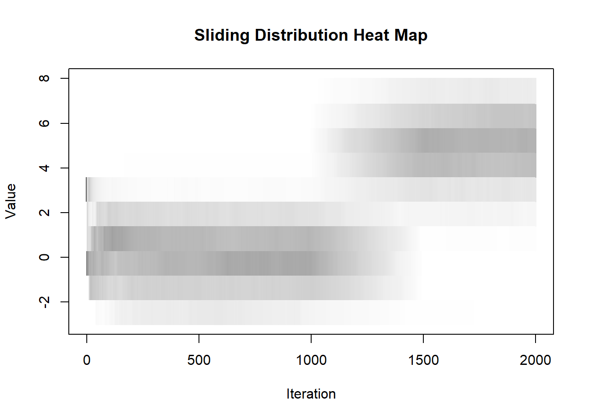
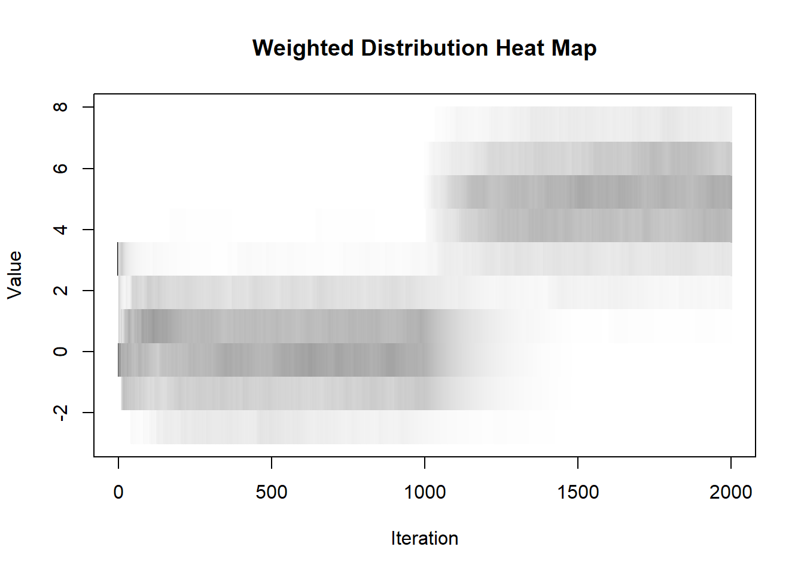
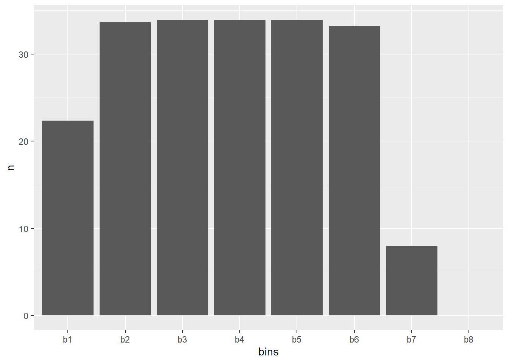

4.1 Lection 1
2020-02-04
This exercise was done as described by: https://machinelearningmastery.com/machine-learning-in-r-step-by-step/
but using a data set from: https://archive.ics.uci.edu/ml/datasets/Breast+Cancer+Coimbra#
Read the data
Factor variable Classification
NOTE: in order to use the caret packages in all its’ capabilities you must do install.packages("caret", dependencies = T)
create a validation dataset and use the remaing for training
dimensions of the new dataset
## [1] 94 10list types for each attribute
## Age BMI Glucose Insulin HOMA
## "integer" "numeric" "integer" "numeric" "numeric"
## Leptin Adiponectin Resistin MCP.1 Classification
## "numeric" "numeric" "numeric" "numeric" "factor"take a peek at the first 5 rows of the data
## Age BMI Glucose Insulin HOMA Leptin Adiponectin Resistin
## 1 48 23.50000 70 2.707 0.4674087 8.8071 9.702400 7.99585
## 2 83 20.69049 92 3.115 0.7068973 8.8438 5.429285 4.06405
## 3 82 23.12467 91 4.498 1.0096511 17.9393 22.432040 9.27715
## 5 86 21.11111 92 3.549 0.8053864 6.6994 4.819240 10.57635
## 6 49 22.85446 92 3.226 0.7320869 6.8317 13.679750 10.31760
## 8 76 23.80000 118 6.470 1.8832013 4.3110 13.251320 5.10420
## MCP.1 Classification
## 1 417.114 1
## 2 468.786 1
## 3 554.697 1
## 5 773.920 1
## 6 530.410 1
## 8 280.694 1list the levels for the class
## [1] "1" "2"summarize the class distribution
## freq percentage
## 1 42 44.68085
## 2 52 55.31915summarize attribute distributions
## Age BMI Glucose Insulin
## Min. :29.00 Min. :18.37 Min. : 60.00 Min. : 2.432
## 1st Qu.:45.00 1st Qu.:23.13 1st Qu.: 85.25 1st Qu.: 4.174
## Median :56.50 Median :27.25 Median : 92.00 Median : 5.796
## Mean :57.85 Mean :27.42 Mean : 97.12 Mean :10.396
## 3rd Qu.:71.00 3rd Qu.:30.90 3rd Qu.:103.00 3rd Qu.:11.670
## Max. :86.00 Max. :38.58 Max. :201.00 Max. :58.460
## HOMA Leptin Adiponectin Resistin
## Min. : 0.4674 Min. : 4.311 Min. : 1.656 Min. : 3.210
## 1st Qu.: 0.8357 1st Qu.:12.466 1st Qu.: 5.438 1st Qu.: 6.703
## Median : 1.3234 Median :20.652 Median : 8.184 Median :10.476
## Mean : 2.8241 Mean :26.723 Mean : 9.734 Mean :14.466
## 3rd Qu.: 2.9754 3rd Qu.:36.890 3rd Qu.:11.182 3rd Qu.:17.347
## Max. :25.0503 Max. :90.280 Max. :38.040 Max. :82.100
## MCP.1 Classification
## Min. : 45.84 1:42
## 1st Qu.: 257.88 2:52
## Median : 458.79
## Mean : 515.39
## 3rd Qu.: 691.07
## Max. :1698.44split input and output
boxplot for each attribute on one image 
barplot for class breakdown 
scatterplot matrix 
box and whisker plots for each attribute 
density plots for each attribute by class value 
Run algorithms using 10-fold cross validation
linear algorithms
nonlinear algorithms CART
kNN
- advanced algorithms SVM
Random Forest
summarize accuracy of models
##
## Call:
## summary.resamples(object = results)
##
## Models: lda, cart, knn, svm, rf
## Number of resamples: 10
##
## Accuracy
## Min. 1st Qu. Median Mean 3rd Qu. Max. NA's
## lda 0.4000000 0.5916667 0.7777778 0.7362626 0.8712121 1.0000000 0
## cart 0.2222222 0.5138889 0.6333333 0.6049495 0.7121212 0.8888889 0
## knn 0.3333333 0.5138889 0.6111111 0.5929293 0.6666667 0.8181818 0
## svm 0.4000000 0.5666667 0.7777778 0.7333333 0.8611111 1.0000000 0
## rf 0.5555556 0.6666667 0.6833333 0.7340404 0.8080808 1.0000000 0
##
## Kappa
## Min. 1st Qu. Median Mean 3rd Qu. Max. NA's
## lda -0.3636364 0.20714286 0.5263158 0.4526732 0.7382134 1.0000000 0
## cart -0.6153846 0.01315789 0.1993007 0.1853771 0.4372856 0.7692308 0
## knn -0.3500000 0.01315789 0.2252747 0.1723948 0.3414634 0.6333333 0
## svm -0.2500000 0.15714286 0.5263158 0.4586148 0.7197802 1.0000000 0
## rf 0.1000000 0.27962578 0.3446448 0.4542901 0.6213710 1.0000000 0compare accuracy of models 
summarize Best Model
## Random Forest
##
## 94 samples
## 9 predictor
## 2 classes: '1', '2'
##
## No pre-processing
## Resampling: Cross-Validated (10 fold)
## Summary of sample sizes: 85, 85, 83, 84, 84, 85, ...
## Resampling results across tuning parameters:
##
## mtry Accuracy Kappa
## 2 0.7340404 0.4542901
## 5 0.7118182 0.4082955
## 9 0.7329293 0.4549273
##
## Accuracy was used to select the optimal model using the largest value.
## The final value used for the model was mtry = 2.estimate skill of LDA on the validation dataset
## Confusion Matrix and Statistics
##
## Reference
## Prediction 1 2
## 1 6 2
## 2 4 10
##
## Accuracy : 0.7273
## 95% CI : (0.4978, 0.8927)
## No Information Rate : 0.5455
## P-Value [Acc > NIR] : 0.06495
##
## Kappa : 0.4407
##
## Mcnemar's Test P-Value : 0.68309
##
## Sensitivity : 0.6000
## Specificity : 0.8333
## Pos Pred Value : 0.7500
## Neg Pred Value : 0.7143
## Prevalence : 0.4545
## Detection Rate : 0.2727
## Detection Prevalence : 0.3636
## Balanced Accuracy : 0.7167
##
## 'Positive' Class : 1
## In this post you discovered step-by-step how to complete your first machine learning project in R